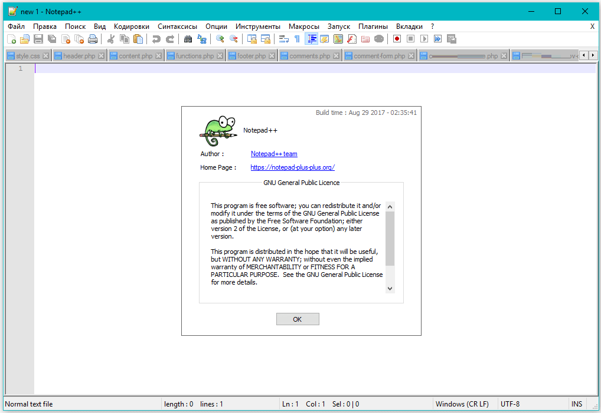

Текстовый редактор, предназначенный для программистов и всех тех, кого не устраивает скромная функциональность входящего в состав Windows Блокнота.
Скачать Notepad++ бесплатно на русском языке можно по прямой ссылке с официального сайта разработчика (https://notepad-plus-plus.org/).
У редактора есть масса существенных преимуществ перед наиболее известными приложениями, такими как, например, Microsoft FrontPage или Adobe Dreamweaver.
Внешний вид редактора представлен на рисунке: 
[ Домой ]